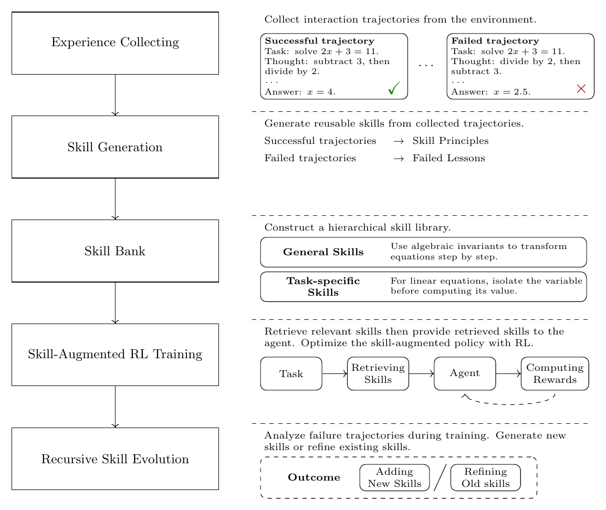

第 6 章 面向 LLM 智能体的强化学习
RL for LLM Agents
6 面向智能体的强化学习
用强化学习训练智能体，常被称为面向智能体的强化学习（agentic RL），这并不是新概念。在经典机器学习中， 面向智能体的强化学习通常从头训练一个特定领域的决策模型。例如在下 Atari、围棋这类复杂游戏（Mnih et al., 2013; Silver et al., 2017） 或控制机器人行走（Lee et al., 2024）等任务中，目标是探索结构化环境，从随机初始化出发学习最优策略。
随着 LLM 成为自主系统的核心组件，强化学习的角色也从“从头学习策略”转变为“把预训练模型适配到动态开放环境中的序贯决策”。 在这一背景下，强化学习意在弥补 LLM 的一个关键局限：模型虽然含有海量世界知识，其输出却并非天生为长程交互而优化。 例如，SFT 训练后的 LLM 可以为调用外部 API 正确生成代码，却可能在交互中无法从意外的执行错误里恢复。
本节聚焦面向 LLM 智能体的强化学习这一新兴范式。我们先讨论强化学习如何帮助智能体获得基础能力，包括长程规划与工具集成推理； 随后介绍环境设计与扩展的作用，它们为训练和评估智能体强化学习系统提供必要基础；我们也讨论信用分配，它为智能体学习提供更细粒度的反馈。 最后，我们探索智能体如何借助记忆管理、技能优化、轨迹精炼等机制，从交互经验中持续改进。
6.1 构建智能体能力
基于 LLM 的智能体把 LLM 从被动的应答生成器扩展为交互式决策系统。智能体不再只产出单次回答，而是持续观察环境、选择动作， 并通过交互更新自身行为。正是这个交互回路，使智能体能完成需要长程执行的复杂任务。虽然 LLM 已具备很强的能力， 如指令理解与推理，但这些能力大多是为静态文本生成发展的，未必足以应对动态交互场景。部署到真实环境后，智能体还需要把推理能力 进一步适配到序贯决策：把高层目标分解为可执行的步骤、选择恰当的动作，并在执行遇到意外失败时恢复。
这类智能体能力很难只靠静态的输入-输出示范获得。单个决策的好坏往往取决于其长期后果与最终任务结果：一个看似合理的局部动作， 经多次交互后可能最终导致失败；而一次失败也可能为后续决策提供宝贵经验。为应对这一挑战，强化学习已成为训练智能体系统的标准做法： 它让智能体通过环境反馈探索不同行为、提升能力（Singh et al., 2025c; Feng et al., 2025）。
本小节聚焦智能体强化学习中的两项关键能力：规划（planning）与工具使用（tool use）。 规划使智能体能把复杂目标分解为可执行步骤、在长时域内做出有效决策；工具使用使智能体能与外部资源（知识库、计算工具等）交互， 把能力扩展到模型参数中编码的信息之外。
6.1.1 规划
智能体的自主性，指的是它能独立确定完成给定任务所需的步骤——即使输入并未明确规定这些步骤何时执行。这一能力要求智能体 这种自主性常常体现在生成一个指导执行轨迹的结构化计划上。例如，给定具体的任务描述，智能体可能给出一个可执行的、 包含工具使用决策的计划：
Environment: Calculator, Database API（环境：计算器、数据库 API）
Task: Weng earns $12 per hour for babysitting. Yesterday, she babysat for 50 minutes. How much did she earn? Please save the result into the database. （Weng 做保姆时薪 12 美元，昨天照看 50 分钟，她挣了多少？请把结果存入数据库。）
Output:
1. Extract the relevant numerical values and identify the required computation.（提取相关数值并确定所需计算。）
2. Call the calculator tool to evaluate the expression 12 × (50/60).（调用 calculator 工具计算 12 × (50/60)。）
3. Format the computed result into a valid JSON schema.（把计算结果格式化为合法的 JSON。）
4. Invoke the update_record API to save the final earnings into the database. （调用 update_record API 把最终收入写入数据库。）
Next, I will execute the plan step by step.（接下来我将逐步执行该计划。）
……
与单轮回答生成不同，智能体规划需要一串相互依赖的决策，早期选择会影响后续的工具使用、环境反馈与最终任务成败。 因此提升规划能力不仅要教会模型生成合理的中间步骤，还要让它能依据执行结果调整行为。为此研究者探索了多种途径。 其中有前景的一条是强化学习：它天然地把智能体规划表述为“由环境反馈驱动的顺序决策 + 轨迹级奖励”。实践中， SFT 提供冷启动——让模型模仿高质量规划轨迹；强化学习则借助交互式反馈与轨迹级优化进一步精炼智能体。
6.1.1.1 监督式规划数据
在施加强化学习之前，通常先用 SFT 为基于 LLM 的智能体提供冷启动，教会它们基本的规划与交互行为 （Chen et al., 2023a; Zhang et al., 2024b; Zeng et al., 2024a）。如图 27 所示，为智能体规划构造 SFT 数据通常分三个阶段： (1) 准备多样化的环境与任务；(2) 通过智能体与环境的交互合成专家级轨迹（动作-观测序列）；(3) 依据预设的评估标准从采样轨迹中 挑选高质量轨迹。具体地，专家轨迹可以借助最先进的 LLM 充当专家智能体来生成，再按奖励信号或任务成功标准保留可靠的示范。 通过这一过程，LLM 能够从中学习规划行为。
| 环境与任务 | 轨迹采样 | 轨迹评估 | 轨迹数据集 |
|---|---|---|---|
|
环境 \(e\)：Calculator（计算器）、Database API（数据库 API） 任务 \(q\)：Weng 做保姆时薪 12 美元，昨天照看 50 分钟，她挣了多少？请把结果存入数据库。 |
轨迹 1：计划 \((p^1)\) → 动作 \((u_1^1)\) → 观测 \((o_1^1)\) → …… 轨迹 2：计划 \((p^2)\) → 动作 \((u_1^2)\) → 观测 \((o_1^2)\) → …… 轨迹 N：计划 \((p^N)\) → 动作 \((u_1^N)\) → 观测 \((o_1^N)\) → …… |
评估采样得到的轨迹： ✓ 解答正确 ✓ 使用了工具 ✓ 执行成功 ✓ …… |
从采样轨迹中挑选的高质量示范： \((e,q,p,o)\) 例：\((e,q,p^2,u_1^2,o_1^2,\cdots)\) |
通过这一过程，LLM 能够从专家示范中学习规划行为，提升生成结构化执行计划的能力。
其中 \(e\) 是环境信息（包括可用工具与外部资源），\(q\) 是用户给出的任务描述，\(p\) 是生成的计划——把任务分解为若干中间步骤。 \(u_t\) 与 \(o_t\) 分别表示智能体在第 \(t\) 个交互步的行为，以及环境返回的对应观测。具体地，\(u_t\) 是智能体执行的可执行行为 （如工具调用），\(o_t\) 是执行 \(u_t\) 后环境返回的反馈。因此 \(\{u_1,o_1,\cdots,u_T,o_T\}\) 构成智能体与环境之间的一条顺序交互轨迹。 注意：第 2 节中的 \(u_t\) 与 \(a_t\) 虽都表示“动作”，但抽象层级不同——\(u_t\) 表示智能体规划中的高层交互步骤（如调用某个工具）， \(a_t\) 则是标准的基于 LLM 的强化学习表述中的低层词元级动作，对应语言模型生成单个词元。
与 LLM 指令微调类似（Longpre et al., 2023; Zhou et al., 2023），轨迹数据的规模与质量显著影响智能体训练的效果。 高质量轨迹提供了明确的监督信号，教会智能体如何分解复杂任务、选择合适的工具、与动态环境交互。因此近期研究着手构造 基于轨迹的指令微调数据集，以增强基于 LLM 的智能体的规划能力。
一个直接的做法是把生成的轨迹直接用于指令微调。但基于 LLM 的智能体产生的轨迹可能含有不成功的计划、低效的工具使用或执行失败， 会引入带噪监督。因此现有方法通常用基于任务成功标准或启发式规则的过滤策略来挑选高质量示范。例如 AgentInstruct 收集交互轨迹 并过滤失败样本，构造了 AgentInstruction 数据集；FireAct 则研究“来自多任务、多推理范式的多样轨迹数据”对改进智能体微调的影响 （Zeng et al., 2024a; Chen et al., 2023a）。
除选择高质量轨迹外，另一个难点是如何有效表示轨迹中复杂的交互过程。与常规指令微调不同，智能体轨迹不仅包含最终响应， 还包含中间规划过程与多步环境交互。因此，如何组织并标注轨迹的不同组成部分，对智能体获得规划与执行能力至关重要。 针对这一挑战，AgentLUMOS 提出了模块化训练框架，把高层规划与低层执行显式分离（Yin et al., 2024）：其规划模块学习生成高层子目标， 其 grounding 模块学习把子目标翻译成借助外部工具的可执行动作。这种模块化设计让智能体能从结构化轨迹标注中分别获得不同能力。
此外，即使有有效的轨迹选择与表示，扩展多样化高质量轨迹数据的生成仍具挑战。现有方法常依赖人工设计的环境与规划任务， 限制了所收集轨迹的多样性与覆盖面；设计新环境需要大量人类专业知识，构造难度合适的任务也不容易。为弥补这一局限， AGENTGEN 探索用 LLM 自动生成多样的环境与规划任务，使大规模合成不同任务复杂度的轨迹数据成为可能（Hu et al., 2025）。
6.1.1.2 用强化学习学习规划
尽管 SFT 能为规划提供有用的冷启动，它主要教模型模仿离线示范，受限于已收集轨迹的质量与覆盖范围。相比之下， 强化学习通过与环境直接交互进一步优化规划：智能体依据其计划与执行行为的结果获得反馈。
在智能体规划的表述下，基于 LLM 的智能体可以视为一个高层策略：先生成计划，再产出一串可执行行为（Li et al., 2025b）。 给定环境信息 \(e\) 与任务描述 \(q\)，智能体首先生成计划 \(p\)，随后通过一连串行为与观测同环境交互：
强化学习的目标是优化智能体策略，使生成的轨迹获得更高的环境反馈。该目标可写成：
其中 \(\pi_{\theta}\) 是由 LLM 参数化的智能体策略，\(R(\tau)\) 是评价规划过程整体质量的轨迹级奖励。实践中，这一奖励可按任务成功来定义。 随后即可用第 3 节介绍的标准强化学习算法（如 PPO 或 GRPO）优化该目标。
与 SFT 相比，强化学习为智能体规划带来两点重要优势。第一，它让智能体能从执行结果中学习，而不只是从静态示范学习： 若某个计划导致工具执行失败或环境反馈不佳，智能体会受到惩罚、被鼓励探索其他行为。第二，强化学习支持轨迹级的信用分配， 模型能依据后期结果调整早期规划决策。这对智能体规划至关重要——早期的子目标分解或工具选择会显著影响最终任务成败。
6.1.2 工具使用
工具使用是基于 LLM 的智能体的另一项基础能力。工具让智能体突破内部参数的限制：可以访问外部知识、在外部系统中执行动作。 早期研究表明，LLM 可以通过基于提示的“推理-行动”模式使用工具（Chang et al., 2024; Yao et al., 2023b）。ReAct 就是一个代表例子： 模型在推理步骤与工具使用动作之间交替（Yao et al., 2023b）。然而，基于提示的工具使用往往不稳定，非常依赖模型自身能力。 因此，SFT 方法用工具使用轨迹训练 LLM，让模型从示范中学习何时、如何调用工具（Komeili et al., 2022; Schick et al., 2023）。 即便如此，SFT 教的仍主要是模仿：它无法直接优化“该不该用工具、该用哪个工具、如何在工具收益与成本之间权衡”。 强化学习为高效工具使用提供了自然框架：可以基于任务成功、工具使用是否正确、是否完整来定义奖励 （Qian et al., 2025; Singh et al., 2025b）。
6.1.2.1 基于提示的工具使用
基于提示的工具使用是一种简单方法：不更新模型参数，也能让基于 LLM 的智能体与外部工具交互。不过模型未必天然知道何时调用工具、 如何组织工具使用行为，因此通常需要在提示中给出工具说明和若干示范，展示“推理—工具调用—观测”之间如何交替。 每一步，模型先生成一段推理轨迹，再产出一个工具使用动作；工具返回观测后，模型利用这一反馈更新下一步决策。例如：
update_record(json): save a JSON record into the database.（把 JSON 记录写入数据库）
Demonstration（示范）
Task: Tom earns $15 per hour. He worked for 2 hours. How much did he earn? Please save the result into the database.
Thought: I need to compute the total payment.
Action: calculator(15 × 2)
Observation: 30
Thought: The payment is 30 dollars. I need to save it into the database.
Action: update_record({"earning": 30})
Observation: success
Answer: Tom earned $30, and the result has been saved into the database.
Current Task（当前任务）
Weng earns $12 per hour for babysitting. Yesterday, she babysat for 50 minutes. How much did she earn? Please save the result into the database.
Output（输出）
Thought: I need to compute the payment based on the hourly wage and working time.
Action: calculator(12 × 50/60)
Observation: 10
Thought: The payment is 10 dollars. I need to save it into the database.
Action: update_record({"earning": 10})
Observation: success
Answer: Weng earned $10, and the result has been saved into the database.
这样的示范教会模型一种工具使用模式：对任务进行推理，必要时调用外部工具，读取返回的观测12，再继续执行过程。
12 我们把外部工具返回的响应称为“观测”（observation）。
6.1.2.2 监督式工具使用数据
要让工具使用更可靠，可以进一步用工具使用轨迹训练 LLM。在这种设定下，每条训练样本包含用户任务、可用工具的描述， 以及一个示范的工具使用过程。模型学习何时调用工具、选哪个工具、如何构造合法的参数、如何使用返回的观测。例如，可以这样构造一条训练样本：
y = Thought: compute the payment（计算报酬）; Action: calculator(12 × 50/60); …; Answer: Weng earned $10.（Weng 挣了 10 美元。）
有了这样的数据，SFT 教模型模仿示范出的工具使用模式：模型能学会工具调用的格式，以及观测在后续生成中的作用。
构造这类数据的常见方式是人工标注工具使用轨迹。但这要求标注者知道该用哪个工具、如何写合法参数、如何判断返回观测是否有用—— 这个过程代价高昂，也很难扩展到大量工具与任务。
应对这一数据构造问题的代表方法是 Toolformer：用自监督方法生成工具使用数据（Schick et al., 2023）。它不依赖大规模人工标注， 而是从每个 API 中只取少量示范，让语言模型为一个大型文本语料标注可能的 API 调用；执行这些调用后，Toolformer 只保留那些 能帮助模型更好预测未来词元的 API 调用；过滤后的数据再用于微调模型。经过这一过程，模型学会何时调用工具、传什么参数、 以及如何把工具结果融入后续生成。
除学习使用少量工具外，后续研究把工具使用训练扩展到更大、更真实的 API 空间。API-Bank 为工具增强的 LLM 构建了基准与训练集， 要求模型在可执行环境中规划、检索并调用 API（Li et al., 2023）。ToolLLM 构建了含 1.6 万多个真实 API 的 ToolBench， 并用自动生成的“指令-解法”轨迹训练 ToolLLaMA（Qin et al., 2024）。Gorilla 聚焦大规模 API 调用，微调基于 LLaMA 的模型以生成准确的 API 调用；它还使用文档检索器来减少 API 幻觉、适应不断变化的 API 文档（Patil et al., 2024）。
6.1.2.3 用强化学习学会使用工具
尽管 SFT 能教 LLM 模仿工具使用示范，它仍受离线轨迹的覆盖面与质量限制：模型主要学到监督数据里出现过的工具使用模式， 因此可能无法泛化到不熟悉的工具、复杂的工具组合或新的交互模式。更重要的是，SFT 没有直接优化“该不该调用工具、选的工具是否恰当、 返回的观测能否帮助得出最终答案”。这些局限在多步工具使用场景中尤为突出——模型需要学会何时调用工具、如何构造工具输入、 如何解释工具输出、何时停止使用工具。
为突破这些局限，研究者探索了用强化学习增强工具使用。模型不再只是模仿固定示范，而是在 rollout 期间与工具交互， 从任务结果或工具执行结果中获得反馈。给定用户任务 \(q\) 与一组可用工具 \(\mathcal{T}\)，模型生成一条工具使用轨迹：
其中 \(h_t\) 表示第 \(t\) 步的推理状态，\(u_t\) 表示高层的工具使用动作，\(o_t\) 表示工具或环境返回的观测，\(y\) 是最终答案。 这里 \(h_t\) 可以是自然语言推理，\(u_t\) 则是可执行行为，如选择工具并提供参数。强化学习的目标是优化策略， 使生成的轨迹获得更高奖励：
实践中，该目标可用 PPO 或 GRPO 等标准强化学习算法优化。近期研究表明，这种结果驱动的优化能帮助 LLM 学会更灵活的工具使用行为， 比如何时搜索、何时执行代码、收到报错信息后如何修正工具调用（Jin et al., 2025; Chen et al., 2025; Feng et al., 2025; Singh et al., 2025a）。
不过，基于强化学习的工具使用也带来独特挑战。第一，动作空间比一般文本生成复杂：一次工具使用可能涉及工具选择、参数生成、 执行时机与响应整合，任何一处的小错误都可能导致工具调用失败。第二，奖励信号常稀疏且延迟：环境可能只在整条轨迹结束后才给出最终成败信号， 难以分辨是哪个工具导致了成功或失败。第三，工具使用还会引入额外成本：不必要的调用会推高延迟与计算开销，而工具用得不够又可能答错。 因此模型不仅要学会如何用工具，还要学会如何高效地用。
一个关键方向是为工具使用设计信息量更大的奖励。与其只用最终答案奖励，我们可以把奖励分解为多个组成部分：
其中 \(R_{\mathrm{ans}}\) 度量最终答案是否正确，\(R_{\mathrm{fmt}}\) 度量模型是否遵循了要求的工具使用格式，\(R_{\mathrm{exec}}\) 度量工具调用能否成功执行，\(R_{\mathrm{tool}}\) 度量模型是否选择了合适的工具并传入了合法参数。\(C_{\mathrm{tool}}\) 表示工具使用的成本， 如调用次数、延迟或计算开销。系数 \(\alpha,\beta,\gamma,\lambda\) 控制各项奖励的相对权重。
在实践中，这种奖励分解比单纯的最终答案奖励提供更稠密的反馈。例如，模型选对了工具却传了非法参数，执行奖励会惩罚这次无效调用， 同时保留对正确工具选择的肯定；模型虽然答对，却用了许多不必要的调用，成本项就会抑制这种低效行为。ToolRL 系统研究了这一奖励设计问题， 表明细粒度的奖励分解能让工具选择与工具应用的强化学习训练更稳定、更有效（Qian et al., 2025）。
另一个方向是用强化学习改进策略性工具使用。例如 ReTool 先用带代码增强的推理轨迹构建冷启动模型，再结合实时代码执行做强化学习。 在 rollout 期间，模型交替进行自然语言推理与代码执行、观察执行结果并修正后续推理。这使模型能够基于结果反馈发现何时、如何调用代码解释器， 而不是依赖人工编写的规则（Feng et al., 2025）。Search-R1 与 ReSearch 在检索增强的推理中沿用了类似思想： 训练模型在推理过程中生成查询语句、用检索到的信息更新后续步骤，而不是依赖固定的检索流水线或手工设计的搜索提示 （Jin et al., 2025; Chen et al., 2025）。
到这里，我们介绍了强化学习如何增强基于 LLM 的智能体的核心能力。由于这类智能体建立在下层 LLM 之上，其强化学习训练可以直接利用 第 3 节的通用 LLM 强化学习算法。不过，智能体的强化学习还引入了超出常规响应优化的额外挑战。关键难点在于 如何从环境获得高质量反馈，以及如何有效利用这些信号改进智能体行为。因此近期关于智能体强化学习的工作不仅需要合适的强化学习算法， 还需要针对智能体场景特有挑战的专门方法（Huo et al., 2026; Liu et al., 2026b）。
6.2 环境设计与扩展
前两小节聚焦优化智能体在规划与工具使用上的策略。现在转向智能体强化学习的另一个关键组成部分：产生交互经验的环境。 环境不只是一套测试基准。它决定智能体能做哪些动作、能观察到什么、每次动作之后底层状态如何变化、任务成功如何评估。 更形式化地，环境可以表示为：
其中 \(\mathcal{S}\) 是状态空间，\(\mathcal{U}\) 是可用动作或工具调用的集合，\(\mathcal{O}\) 是观测空间。转移函数 \(P_e\) 决定一个动作如何改变环境状态；验证器 \(V_e\) 判断执行后的状态是否满足任务目标。该表述刻画的是环境如何产生观测与反馈， 而不是智能体如何生成动作。
环境质量直接影响智能体能学到什么。例如，在狭窄环境中训练的智能体可能只是记住了特定的 API、任务模板或交互模式； 不可靠的环境会返回前后矛盾的观测或不正确的奖励，给学习过程引入噪声。理想情况下，有效的环境应当提供多样任务、可执行的交互、 可靠的状态转移与可验证的结果。
为促进泛化，我们可以让智能体在一套环境分布上训练，而不是局限在单个固定环境：
其中 \(p(\mathcal{E})\) 是环境分布，\(p_e(\mathcal{Q})\) 是环境 \(e\) 内的任务分布；交互轨迹 \(\tau\) 沿用前几小节的定义。 这一目标表明：智能体的表现不仅取决于策略优化，也取决于训练所用环境的覆盖面与质量。
然而，人工构造高质量环境代价高昂、难以扩展：真实系统可能不可访问或过于昂贵；纯语言模拟的环境容易搭建，却可能产生 不一致的状态转移（Li et al., 2026）。因此近期研究探索程序化、可编程的环境合成：用可执行程序与结构化状态， 提供可扩展且可靠的交互经验。
| 环境规格说明 | 程序化合成 | 场景生成 | 智能体-环境交互 | 验证 |
|---|---|---|---|---|
| 状态模式（schema） 工具与 API 转移规则 |
可执行代码 数据库状态 工具接口 |
初始状态 用户任务 难度控制 |
\(u_1\rightarrow o_1\rightarrow\cdots\) \(\rightarrow u_T\rightarrow o_T\) |
状态检查 执行成功 任务完成 |
⇣（虚线） 智能体学习：轨迹收集，SFT 或 RL 更新 ⇡（实线）
这一过程如图 28 所示，通常包括以下步骤：
环境规格说明（Environment Specification）。 首先定义状态模式13、可用工具与 API，以及环境的转移规则。
程序化合成（Programmatic Synthesis）。 随后把环境实现为一个可执行系统。这一步通常将结构化规格说明转换为程序代码、数据表和可调用的工具接口。
场景生成（Scenario Generation）。 基于环境规格，生成多样的初始状态与用户任务。任务应覆盖不同目标、约束与难度。例如在购物环境中，简单任务可能只是购买一件商品， 较难的任务则可能要求比较多个商品。
智能体-环境交互（Agent-Environment Interaction）。 智能体与生成的环境进行多轮动作-观测交互。每一步，智能体选择一个工具并提供所需参数；环境执行动作并返回观测。
结果验证（Outcome Verification）。 交互完成后，验证器检查任务是否成功解决：可以检查工具执行结果、数据库状态或其他结构化记录。
智能体学习（Agent Learning）。 最后，用经过验证的轨迹改进智能体。一方面，成功轨迹可作为 SFT 示范，任务级或步骤级的反馈可支持强化学习训练； 另一方面，失败交互同样有价值：它们暴露当前策略与任务分布中的短板，可以据此生成针对性的场景， 专门锻炼智能体的薄弱环节、为后续训练提供更有信息量的经验（Chen et al., 2026; Sun et al., 2026）。更广义地说， 这一过程可以看作从智能体经验中学习，我们将在 6.4 节讨论。
尽管有这些进展，仍有几个关键问题待解决。第一，如何同时扩展环境的数量与多样性？第二，如何保证生成的环境可执行、可验证？ 第三，智能体如何在异构环境和未见过的环境之间泛化？
一个方向聚焦于扩展环境多样性。RandomWorld 为工具使用智能体程序化地生成可执行工具与组合式任务（Sullivan et al., 2025）。 与只含固定轨迹的静态数据集不同，这些生成的环境支持在线执行，让智能体在训练中可以探索不同的工具组合。 AgentScaler 进一步构造异构模拟环境，把通用函数调用能力的学习与领域特定适配分离开（Fang et al., 2026）。 在更大规模上，DeepSeek-V3.2 合成了多样的环境与面向智能体后训练的复杂任务，表明广泛的交互经验对长尾泛化很重要 （DeepSeek-AI, 2025）。
另一个方向聚焦可执行性。EnvScaler 先构造规定状态模式、可用工具与交互规则的环境骨架，再在每个环境内生成多个任务场景 （Song et al., 2026）。Agent World Model 把类似思想用于实现合成环境：配以可执行代码与数据库支撑的状态（Wang et al., 2026g）。 与纯语言模拟相比，这些程序化环境产生更一致的状态转移，并通过实际执行生成工具输出。
可验证性同样重要，因为强化学习需要可靠的反馈。环境不应只评估文本层面的最终回复，还应检查智能体是否实现了期望的状态变化。 给定最终环境状态 \(s_T^e\) 与任务目标 \(g\)，可以定义基于状态的奖励：
其中 \(V_e(\cdot)\) 可以用可执行测试、数据库查询或基于规则的验证器来实现。例如在数据库操作任务中，验证器可以直接检查要求的记录是否被正确插入。 这比把生成答案与参考答案文本比对更可靠。EnvScaler 与 Agent World Model 都用了这类机制，把智能体动作与可观察的状态变化联系起来。
扩展环境还会带来显著的异构性：不同环境在任务难度、可用工具、交互长度上差异很大，可能让强化学习训练不稳定， 使智能体过拟合到频繁采样或更容易的环境。AutoForge 通过合成“难但可验证”的任务、并在环境层面估计学习信号来应对这一问题 （Cai et al., 2025）。这一设计降低了不稳定的模拟交互的影响，改善了跨异构环境的训练。
6.3 信用分配
信用分配并不是基于 LLM 的智能体独有的问题，而是传统强化学习长期面临的挑战（Sutton, 1984; Zhou et al., 2020）。 奖励延迟出现时，智能体必须判断该强化或抑制哪些历史动作。经典方法（如时序差分学习、资格迹）通过沿轨迹反向传播奖励信息来解决这一问题。 在智能体强化学习中，信用分配更具挑战性：每次交互可能涉及高层规划、工具调用与环境反馈，而不是单个低层动作。因此， 信用分配往往需要同时在轨迹级与步骤级两个层面进行。
这一挑战对智能体规划尤其关键。许多任务中，环境只在整条轨迹结束后给出稀疏奖励。然而最终的成功或失败，可能来自更早的规划决策、 一次错误的工具调用，或对外部反馈的无效响应。若把同一个轨迹级奖励直接分配给所有交互步骤，监督就会充满噪声： 智能体可能分不清哪些决策应被强化、哪些应被抑制。
形式化地，给定轨迹 \(\tau=[p,u_1,o_1,\cdots,u_T,o_T]\)，简单的强化学习目标用轨迹级奖励 \(R(\tau)\) 优化整个规划过程。 但这样的奖励只给出关于整体结果的粗糙反馈。因此，信用分配旨在把轨迹级奖励分解为逐步的信号：
其中 \(r_p\) 评价生成计划的质量，\(r_t\) 评价第 \(t\) 个交互步 \((u_t,o_t)\) 对最终任务结果的贡献。
| 交互轨迹 | ||||
|---|---|---|---|---|
| 计划 \(p\) | 步骤 1 \(u_1\rightarrow o_1\) | 步骤 2 \(u_2\rightarrow o_2\) | …… 步骤 \(T\) \(u_T\rightarrow o_T\) | 最终奖励 \(R(\tau)\) |
| 计划奖励 \(r_p\) | 步骤奖励 \(r_1\) | 步骤奖励 \(r_2\) | 步骤奖励 \(r_T\) | 信用分配：把轨迹级反馈向下分配到各步骤 |
信用分配的机制如图 29 所示。这种分解使智能体能分辨失败究竟来自不合理的计划、无效的工具调用，还是对环境反馈的错误应对 （Li et al., 2025b; Xi et al., 2026; Wang et al., 2026e）。例如，考虑“计算保姆报酬并把结果存入数据库”的任务： 假设智能体生成了合理的计划、正确调用了计算器，却没有用要求的 JSON 格式调用数据库 API。若只用最终的轨迹级奖励， 整条轨迹可能只得到很低的分数，例如 \(R(\tau)=0.3\)——尽管早期的规划与计算步骤都是正确的。
为便于说明，我们可以基于预设验证标准定义规则式步骤奖励，如：计划是否包含全部必要步骤、计算是否正确、JSON 模式是否合法、 数据库更新是否成功。这些步骤奖励是诊断信号而非对轨迹级奖励的保守数值拆分，因此它们的和不要求等于轨迹级奖励。 然后可以用信用分配把最终的轨迹级反馈分解为步骤级奖励：
其中 \(r_p\) 表示整体计划合理，\(r_1\)、\(r_2\) 表示智能体正确提取数值并完成计算，\(r_3\) 表示 JSON 格式化部分正确， \(r_4\) 表示数据库更新失败。这样智能体获得的反馈更准确：应保留正确的规划与计算步骤，同时改进数据库更新步骤。
6.4 从智能体经验中学习
AI 系统正逐渐从以人类生成数据为主的时代，迈向智能体更多地从自身经验中学习的时代（Silver & Sutton, 2025）。如 6.1 节所述， 监督数据在教会智能体基本行为（规划、工具调用、回复格式化）上仍然有用。但仅靠人类示范，难以覆盖智能体在复杂动态环境中 可能遇到的全部情形。一条有前景的路线是让智能体从自身交互经验中学习：通过与环境持续交互，智能体收集成功与失败的轨迹， 并借助这些轨迹改进未来的行为。近期文献常把这一过程称为智能体自我演化（agent self-evolution）：智能体利用不断积累的经验 持续提升能力。这里我们讨论从智能体经验中学习的三种常用做法。
第一种是经由智能体经验的记忆管理（memory management）。实践中，智能体可以把先前交互中的有用信息存下来； 面对新任务时，检索相关记忆并作为额外上下文辅助决策。从上下文内学习的角度看，这也可视为一种“学习”：把过往经验并入当前上下文， 让智能体据此改进行为。如此，一种从经验学习的例子就是依据交互结果更新记忆。例如，给定任务后，智能体可以把成功与失败的轨迹都存入记忆系统； 将来解决相似任务时，检索这些经验、避免重复犯错，从而提升任务表现。这种做法通常很简单，不需要额外训练智能体。
第二种是技能优化（skill optimization）。用记忆从经验学习的一个挑战是可扩展性：随着经验不断积累，记忆规模持续增长， 还会混入大量含噪冗余的信息，高效存取相关信息越来越难。技能方法不再存单条经验，而是跨经验识别共性模式、转化为抽象行为。 这些技能提供更紧凑的经验表示，让智能体能把经验迁移到不同任务。与记忆优化类似，我们同样可以更新、精炼智能体的技能， 实现从经验中学习。
第三种是通过轨迹精炼（trajectory refinement）从经验中学习。从这个角度看，智能体的测试时扩展也可视为一种经验学习： 不更新模型参数，而是利用任务执行期间的即时反馈改进当前解法。例如，智能体可以借助工具执行结果或环境反馈识别错误、精炼自己的轨迹。 通过反复尝试与持续精炼，智能体逐步改进决策过程、取得更好的任务表现。
上述三种方法可用多种技术实现。由于本文聚焦强化学习，后文将详细介绍这些方法的强化学习实现。值得注意的是，这些方法虽不一定依赖 传统参数更新，仍可放进式 (69) 与 (70) 所描述的强化学习范式：智能体借助来自经验的反馈改进行为。
6.4.1 记忆管理
记忆管理是智能体从经验学习的直接途径。与环境交互时，智能体可能观察到有用的信息；若这些信息在完成当前任务后就被丢弃， 以后再遇到相似问题就得从头再来。因此，智能体记忆的目标是存储过往交互中的有用信息，并在需要时检索出来。如图 30 所示， 典型的记忆系统通常由三个主要阶段构成（Chhikara et al., 2025）：
记忆检索（Memory Retrieval）。 智能体从记忆库中检索相关记忆，支持当前交互。检索到的信息形式取决于记忆库的构造方式。例如，记忆库可能保存相似任务的成功轨迹， 为当前决策提供可复用的解法；也可能存储用户特定偏好，如常选的酒店、偏好的旅行风格。

记忆抽取（Memory Extraction）。 智能体依据检索到的信息完成当前任务后，可以从交互过程中抽取有用信息、存储备用。例如用户说自己是素食者，就可以抽取一条记忆 “该用户偏好素食”。这一过程可由智能体自身或其他智能体完成。
记忆更新（Memory Update）。 智能体把新抽取的信息与已有记忆整合，更新记忆库。直接的做法是存储所有抽取到的信息；但这种策略并不实际：随着智能体长期运行， 记忆量持续增长，检索越来越低效，还会积累大量冗余。更高级的做法是有选择地更新记忆。具体地，记忆系统可把记忆维护表述为操作选择问题： 给定新抽取的信息，记忆管理器（memory manager）从若干操作中选择一个：\(\mathrm{op}\in\mathcal{A}^{m}=\{\texttt{ADD},\texttt{UPDATE},\texttt{DELETE},\texttt{NOOP}\}\)。 其中 ADD 新建记忆条目，UPDATE 用新观察到的信息修改已有记忆，DELETE 删除过时或矛盾的记忆，NOOP 保持记忆库不变。 实现这种记忆管理器的一种常见方式是：提示一个 LLM，基于当前交互与已有记忆选择恰当操作。
在从经验学习的语境下不难发现：基于记忆的学习，其表现很大程度取决于记忆管理器的准确性。尽管提示 LLM 就能让它选择记忆操作， 或人工设计的规则。因此，面对复杂的记忆更新，它们可能表现吃力、做出错误判断。例如 Yan et al.（2026）的工作指出：用户先说 “我领养了一只叫 Buddy 的狗”，后又补充“我又领养了一只叫 Scout 的狗”，朴素的记忆系统可能把新信息误判为矛盾，执行 DELETE+ADD、覆盖原始记忆。而经过训练的记忆管理器能识别两条信息是互补的，执行 UPDATE 把信息合并为更完整的记忆： “该用户领养了两只狗，Buddy 和 Scout”。
| 可学习的记忆管理 | ||
|---|---|---|
| 抽取的记忆：靠窗座位偏好 / 素食 / 预算酒店 （输入 →） |
记忆管理器 （采样操作 ↓） ↓ ↑ 检索 记忆库（更新记忆）←—有用记忆— 智能体（解决任务） |
任务反馈（计算奖励） ↑ 轨迹 ← RL 训练 → |
一个有前景的改进思路是用强化学习优化记忆操作（Yan et al., 2026）。关键思想是把记忆管理本身变成可学习的决策过程： 给定抽取的记忆 \(x^{\mathrm{mem}}\) 与现有记忆库 \(\mathcal{M}_{\mathrm{old}}\)，记忆管理器充当一个策略，选择记忆操作并生成更新后的记忆内容：
其中 \(\mathrm{op}\) 是从操作集 \(\mathcal{A}^m\) 中选出的记忆操作，\(m'\) 是更新后的记忆内容。应用所选操作后，更新过的记忆库 提供给智能体用于下游任务求解。借助任务级反馈优化记忆管理器，智能体能基于存储经验的实际用处，学会何时、如何更新记忆。 图 31 展示了用强化学习训练记忆管理器的过程。
优化期间，奖励按最终任务表现定义：若更新后的记忆帮助智能体给出正确答案，记忆管理器获得正奖励，否则获得较低奖励。 一个简单奖励函数可定义为：
其中 \(\mathrm{EM}(\cdot)\) 为精确匹配（Exact Match）函数，\(y_{\mathrm{pred}}\) 是预测答案，\(y_{\mathrm{gold}}\) 是标准答案。 这种设计避免了对单条记忆操作做人工标注：记忆管理器通过直接优化操作对下游任务表现的影响，学会哪些操作有益。
优化好记忆管理器后，智能体就能在未来交互中动态维护记忆。不过，学会有效的记忆操作只是经验驱动智能体改进的第一步。 一个关键挑战是如何评估已积累记忆的长期效用。现有记忆优化方法通常基于下游任务表现定义奖励，即检索到的记忆能否帮智能体解决当前任务。 然而，一条记忆的用处未必立刻显现（Xu et al., 2025b）。例如某次交互收集到的失败案例可能不会改进当前回答， 却能在未来任务中帮助智能体避开类似错误。这说明记忆可以成为智能体学习的重要组成部分，而不仅仅是存储过去的信息。
除优化记忆更新操作外，另一个重要问题是如何从积累的经验中构造并组织记忆。可以把记忆构造看作可学习的策略， 而不再是一个固定的预处理步骤，让智能体通过强化学习学到有效的记忆构造方法。这样就能把记忆构造表述为序贯决策过程： 智能体学习如何选择、组织、转化交互经验，形成有用的记忆（Wang et al., 2025d）。
6.4.2 技能优化
技能是对智能体经验的更高层抽象。与记忆聚焦存储过往交互中提取的有用信息不同，技能旨在总结跨多次经验出现的共性模式， 并把它们转化为可复用的能力。具体地说，技能可看作一个结构化的指令包，说明何时应调用该技能、应遵循什么工作流、需要哪些工具、 最终结果如何验证。例如，一个面向推理的技能可以表示为：
Description: Solve complex mathematical, logical, tabular, and constraint reasoning tasks. Use when a task requires multi-step arithmetic, symbolic reasoning, calculator-backed verification, table analysis, optimization, scheduling or allocation constraints, Pareto trade-offs, proof checking, or translating word problems into equations, code, formulas, or executable checks. （处理复杂数学、逻辑、表格与约束推理任务：多步算术、符号推理、计算器验证、表格分析、优化、调度/分配约束、帕累托权衡、证明检查， 或把应用题转化为方程、代码、公式与可执行检查时使用。）
Math Logic Reasoning
Use this skill for reasoning tasks where a wrong intermediate assumption can silently break the final answer. Prefer a compact formal model plus executable verification over unsupported mental arithmetic.
Workflow
1. Restate the target quantity, decision, or claim.
2. Extract givens, units, constraints, and hidden assumptions.
3. Convert the problem into equations, probabilities, inequalities, tables, spreadsheet formulas, graphs, search spaces, constraint satisfaction problems, or short verification scripts.
…
Tool Choices
1. Use Python as a calculator for multi-step arithmetic, combinatorics, simulations, optimization search, or exact rational checks.
2. Use Fraction, Decimal, or sympy when exactness matters.
3. Use pandas for complex tables, joins, grouped summaries, rankings, or data-cleaning logic.
…
Verification Checklist
1. Recalculate the final numeric answer using a second method when feasible.
2. Test boundary cases: zero, negative values, equality limits, duplicate entries, and empty sets.
3. Confirm units after every transformation.
…
Output Style
Give the answer first when possible. Then include a concise derivation, the checked constraints, and any caveats.
实践中，提示里会给出所有可用技能的描述，智能体学习根据当前任务选择合适的技能。被选中的技能充当高层行为模板， 被选中的技能充当高层行为模板，引导智能体的规划与执行过程。例如：
Skill 1: Web Search
This skill enables the agent to retrieve and synthesize external information when the task requires up-to-date or domain-specific knowledge …（任务需要最新或领域特定知识时，检索并综合外部信息）
Skill 2: Math-Logic-Reasoning
Solve complex mathematical, logical, tabular, and constraint reasoning …（处理复杂数学、逻辑、表格与约束推理……）
{More skill descriptions}
User Query: Solve the equation 2x+5=13.（解方程 2x+5=13。）
Selected Skill: Math-Logic-Reasoning（选中技能：Math-Logic-Reasoning）
为智能体构造技能的一种直接做法，是按具体任务需求人工撰写。但同一任务的技能可以有很多不同的设计方式，类似于给 LLM 写提示词： 有人会给出一份带详细指令、明确工作流与执行过程的技能；另一份可能只给高层指导，让智能体自己决定细化的执行策略。 这类技能设计上的差异会显著影响智能体表现（Yu et al., 2026b）。
人工构造技能的一个局限，是其质量与多样性很大程度依赖人类经验。因此，若要 LLM 处理广泛的任务，依赖人工标注数据做 LLM 微调往往效率很低。 为突破这一局限，一条替代路线是从智能体经验中自动生成技能。例如，可以提示 LLM 总结成功轨迹、抽取可复用的技能； 这些生成的技能可加入智能体的技能库，供未来任务复用。
上述生成技能的方式常有质量问题。第一，通用 LLM 并不天然知道如何设计有效的技能，不做额外优化尤其如此。第二，技能生成器可能优化错了目标： 技能生成与技能利用发生在不同语境——LLM 可能因为生成的技能满足提示中给定的指令就认为它有效，但另一个智能体未必能在真实任务中用好它。 因此技能生成不能只追求产出结构良好的技能，还要考虑这些技能能否真正提升任务执行中的表现。近期工作转向用强化学习实现这一目标： 依据生成技能的实际表现来优化技能生成。
这里以 SkillRL 为例，说明如何通过强化学习优化技能生成（Xia et al., 2026）。其思想是：不直接从存储的轨迹中生成技能， 而是先从既有轨迹抽象出可复用技能，用它们引导智能体强化学习训练。训练过程中，智能体持续发现新技能并更新技能库， 实现智能体与其技能的共同演化。图 32 给出了 SkillRL 的示意，这里概述其中的关键步骤。
• 最初，我们从环境收集交互轨迹。这些轨迹既包含成功经验，也包含失败经验，为技能的发现与优化提供多样信号： 成功轨迹揭示有效行为，失败轨迹帮助识别潜在弱点与改进机会。
• 随后用收集到的轨迹抽取可复用技能，初始化技能库。考虑到智能体能力通常兼顾通用解题策略与任务特定流程，
可以按不同抽象层级组织技能：具体可构建分层技能库——通用技能库存储跨任务可迁移的技能以提升泛化，

• 技能库初始化后，智能体检索相关技能来引导强化学习训练过程。具体地，给定任务 \(x\)，智能体从技能库 \(\mathcal{S}\) 中挑选合适的技能：
其中 \(\mathrm{Score}(x,s_i)\) 衡量当前任务与各技能的相关程度，\(\mathcal{S}^{*}\) 为选中的技能集合。这些技能随后被并入智能体的决策过程、 用于引导强化学习优化：它们提供任务分解、执行工作流等高层行为先验，帮助智能体探索更有效的行为、提升强化学习训练效率。
• 通过与环境交互，智能体收集新的轨迹。这些轨迹会被进一步分析，用于发现新技能或精炼已有技能。这样，技能库便与智能体策略共同演化： 技能库提供先验知识以加速强化学习训练，改进后的轨迹又持续丰富和精炼技能库。
重复上述过程，智能体能借助不断积累的经验改进其技能库：新收集的轨迹为发现新技能或精炼已有技能提供更多证据， 更新后的技能库又进一步指导后续强化学习训练。这就形成了一个智能体与其技能随时间共同演化的迭代学习过程。从这一视角看， 技能优化提供了一条把低层交互经验转化为可复用能力的可行路径，并有望成为让智能体持续从自身经验中学习的重要方法 （Wang et al., 2026f; Fu et al., 2026）。
6.4.3 轨迹精炼
与聚焦存储和抽象经验的记忆管理、技能优化不同，轨迹精炼通过修订已生成的轨迹直接改进智能体行为。这一思想的来源是 LLM 的自我精炼能力。 如 5.1 节讨论的，推理增强的强化学习训练使 LLM 能够评估自己的中间推理过程并修正错误解法。例如解数学题时， LLM 可以在每个推理步骤后借助验证中间结果、依据验证结果调整自己的求解轨迹。
自然的延伸是把这种自我精炼能力应用到基于 LLM 的智能体上。与外部环境交互时，智能体会持续收到外部反馈，如工具执行结果或环境状态。 智能体不必一味遵循最初的轨迹，而是可以利用这些反馈信号识别错误、修订先前的决策、生成改进后的轨迹。这样，智能体就能通过持续精炼自身行为， 从自己的交互经验中学习。常用的轨迹精炼方法是 Reflexion（Shinn et al., 2023）：基本思想是把显式的反思过程引入智能体执行。 给定任务后，智能体先生成初始轨迹并从评估器获得反馈；随后分析反馈、总结潜在错误或改进策略，生成一段反思。 在此基础上，智能体在后续尝试中产生改进后的轨迹。这里以数学推理为例。
Initial Trajectory:（初始轨迹）
Thought: I need to isolate \(x\) by moving the constant term to the other side.（要把常数项移到另一边以解出 x。）
Action: Subtract 7 from both sides:（两边减 7：） \[ 3x+7-7=22-7 \] Observation: The equation becomes:（方程变为：） \[ 3x=15 \] Thought: I need to divide both sides by 3 to obtain \(x\).（两边除以 3 得到 x。）
Action: Calculate:（计算：） \[ x=\frac{15}{3}=4 \] Answer: \(x=4\)。
Feedback: The answer is incorrect. This is because \(\frac{15}{3}=5\neq 4\).（答案错误：15/3=5≠4。）
Reflection: The previous trajectory failed because I made an error during intermediate calculation. For future tasks, I should carefully verify arithmetic operations and check the final answer by substituting it back into the original equation.（上一轨迹因中间计算出错而失败。今后应仔细核对算术运算，并把最终答案代回原方程检验。）
Refined Trajectory:（精炼后的轨迹）
Thought: I need to isolate \(x\) and verify the final solution.（解出 x 并验证最终解。）
Action: Subtract 7 from both sides:（两边减 7：） \[ 3x=22-7=15 \] Action: Divide both sides by 3:（两边除以 3：） \[ x=\frac{15}{3}=5 \] Observation: Verify the solution:（验证解：） \[ 3\times 5+7=22 \] Answer: \(x=5\)。
值得注意的是，反馈既可以来自内部评估，也可以来自外部评估器。例如可以用基于规则的验证器、基于 LLM 的评估器或二元奖励信号为智能体提供反馈。 无论反馈来源或形式如何，都需要把它转化为基于语言的表征，让智能体能理解错误、精炼未来行为。受 5.1.2 节的步骤级反馈启发， 我们还可以考虑：为每个决策步骤提供细粒度反馈，能否帮助智能体生成精炼得更好的轨迹。与结果级反馈相比，步骤级反馈能更准确地指出 智能体在何处、为何犯错（Liu et al., 2024; Wang et al., 2025c）。例如智能体解错一道数学题时，二元奖励只说明最终答案错了， 却不会指出错误出在哪个推理步骤、解法应如何修正。然而获取步骤级反馈往往代价高、难度大：它要求对轨迹中每个中间决策做评估。 为应对这一挑战，近期研究探索用 MCTS 等方法自动构造步骤级反馈信号（Yuan et al., 2025）。
上述做法主要依赖提示实现轨迹精炼，仍有不少局限。第一，其表现受 LLM 自身精炼能力上限约束：预训练 LLM 未必天然知道如何解读反馈、 有效修订自己的轨迹，除非做额外优化。第二，基于提示的精炼主要在推理时改进当前轨迹，无法随时间积累经验、跨任务迁移经验。 如 6.4.1、6.4.2 节所讨论的，失败轨迹蕴含着关于智能体弱点的宝贵经验，本可为改进未来行为提供有用的学习信号； 但基于提示的方法只能在这些经验处于当前交互上下文时加以利用。针对这些局限，近期研究开始探索通过训练让智能体获得轨迹精炼能力 （Fu et al., 2025）：或更新模型参数，或基于已收集的经验优化精炼行为（Song et al., 2024）。更多信息请读者参阅这些工作。
尽管轨迹精炼不像传统强化学习那样显式更新模型参数，它仍与强化学习的根本原则一致：依据交互中收集的反馈改进智能体行为。 从上下文内学习的角度看，轨迹精炼中获得的反馈可视为一种临时奖励信号，改变智能体后续的决策过程：智能体不更新策略参数， 而是用反思更新自己的上下文，这可能改变当前交互内未来动作所使用的策略。因此，轨迹精炼可被看作一种上下文内形式的策略改进。 这一视角与新兴的上下文内强化学习（in-context RL，ICRL）研究方向密切相关：它研究智能体如何在不显式更新参数的情况下， 借助交互反馈调整自身行为（Monea et al., 2024）。
［第 6 章完，对应原书页 57–74。］